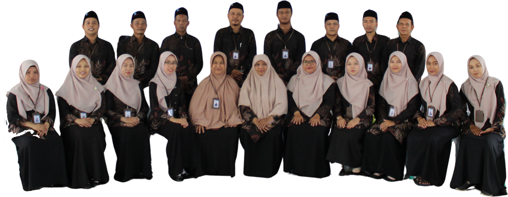

Tentang Kami
Profil singkat, alamat, dan kontak resmi KSPPS BMT Barokatul Adzkia.
Nama Lembaga
KSPPS BMT Barokatul Adzkia Kebumen
Alamat Kantor
Jl. Raya Kambalan, RT 02 RW 04, Kembangsawit, Kec. Ambal, Kab. Kebumen, Prov. Jawa Tengah
Kontak
KSPPS BMT Barokatul Adzkia Kebumen berawal dari 40 anggota Ikatan Cendekiawan Muslim Indonesia (ICMI) yang mendirikan BMT di Kambalan, Ambal, pada 1997. Tokoh pendirinya adalah K.H. Mudhofir, B.A. Tujuan awalnya adalah memudahkan anggota dan menjauhkan mereka dari rentenir.
Modal awal dikumpulkan dari simpanan wajib Rp2.500 pada tahun pertama, sebelum lembaga berbadan hukum. BMT bertumbuh dari Rp500 ribu hingga kini memiliki aset sekitar Rp23 miliar.
Seiring berjalannya regulasi, lembaga ini berubah dari Kopontren menjadi BMT Barokatul Adzkia, KSPPS DAMBA, dan kini KSPPS BMT Barokatul Adzkia Kebumen yang beroperasi di tingkat kabupaten. Perjalanan lengkapnya ada di halaman Sejarah.
Arti nama kami
Barokatul Adzkia
Keberkahan orang-orang pandai, merujuk pada latar belakang pendirinya dari ICMI.
DAMBA
Singkatan dari Darul Amwal.
BMT
Singkatan dari Baitul Maal wat Tamwil. Baitul berarti rumah.
Secara umum, sebuah BMT memiliki dua fungsi:
Maal (fungsi sosial)
- Berfokus pada pengumpulan dan penyaluran dana sosial.
- Mengelola ZIS (zakat, infak, sedekah), dana wakaf, serta pinjaman kebajikan (qardh) untuk masyarakat kelas menengah ke bawah atau fakir miskin.
Tamwil (fungsi bisnis)
- Berfokus pada pengembangan usaha-usaha produktif.
- Menggalang dana dari masyarakat dalam bentuk simpanan atau tabungan.
- Menyalurkan pembiayaan kepada pelaku UMKM dengan akad syariah seperti bagi hasil (mudharabah/musyarakah), jual beli (murabahah), atau sewa (ijarah).
Dari kepengurusan hingga layanan
Susunan kepengurusan dan pengelola KSPPS BMT Barokatul Adzkia Kebumen, dari tingkat tertinggi hingga pelaksana layanan.
Penasehat
Pengawas Manajemen
Pengurus
Dewan Pengawas Syariah
Pengelola
Kantor Cabang
Teguh Hari YuliantoManager CabangMarketing
Heri SusantoKepala Bagian MarketingHoki Nur AlimMarketingMuhammad AfridhoMarketingAlifah CahyaningtyasMarketingTiti LestariMarketingDewi MulyaniDivisi Maal dan MarketingPelayanan
Siti MalichahCustomer ServiceWiwid PujiastutiTellerDian Kusuma WardaniTellerAnita LarasatiTellerSoesiwandhariTellerAdministrasi & Pembukuan
BandiyahPembukuanSyifa Annisatul KholisyohAdminUmum
WinarkoKeamananJunaidiKeamananSobariKebersihan
Pengelola
Jajaran pengelola KSPPS BMT Barokatul Adzkia Kebumen yang melayani anggota setiap hari.
Arahkan kursor atau ketuk wajah untuk melihat nama dan jabatan.
